红衣主教西皮奥内·博尔盖斯的私人别墅收藏，两层 20 个展厅浓缩了 17 世纪罗马最顶级的雕塑与绘画：贝尼尼的成名作群、卡拉瓦乔的五幅油画、拉斐尔与提香——“小而顶”的博物馆模板。
看点路线
Il Percorso
- 1一层先直奔阿波罗与达芙妮（2 厅）与劫夺普洛塞庇娜（4 厅）——贝尼尼双璧
- 2回看大卫（5 厅）：与米开朗基罗版本的对比是全场最佳思考题
- 3一层 8-9 厅：卡拉瓦乔五连（少年巴克斯、生病的巴克斯、圣母与蛇……）
- 4二层绘画馆：拉斐尔《耶稣下葬》、提香《神圣与世俗之爱》、科雷乔《达那厄》
馆藏名作
Le Collezioni Borghese
雕塑Scultura · 10 件
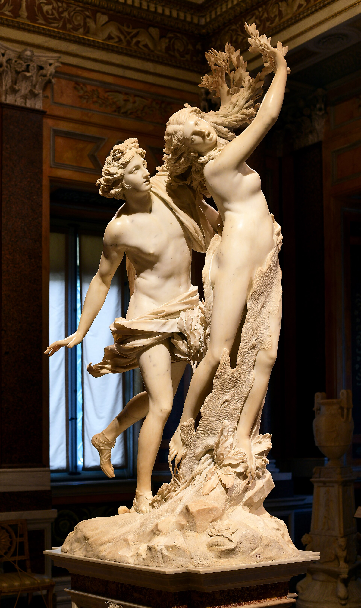
《阿波罗与达芙妮》
追逐在半空中凝固：阿波罗的手触到腰际，达芙妮的指尖正长出树叶。贝尼尼 24 岁完成，大理石刻出了“风”的质感，绕行一周每个角度都是新镜头。
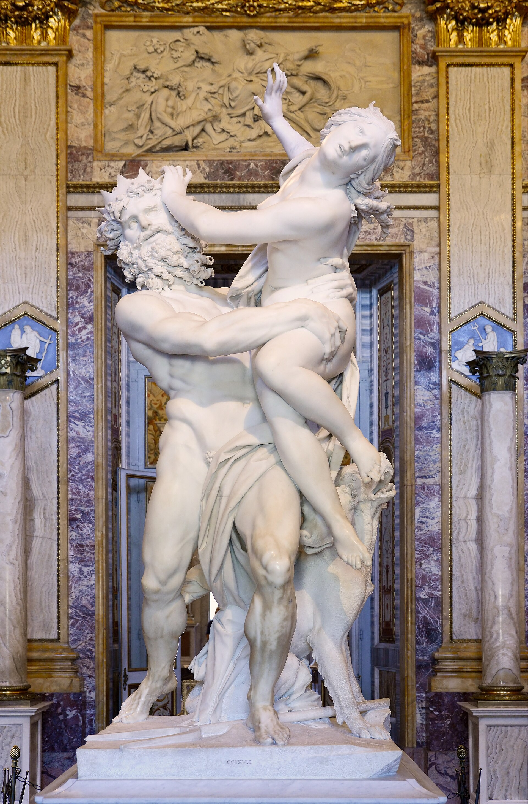
《劫掠普洛塞庇娜》
冥王手指陷进大腿的“肉的凹陷”，让同期画家绝望的一击--23 岁的贝尼尼已经让大理石学会了紧张与挣扎。
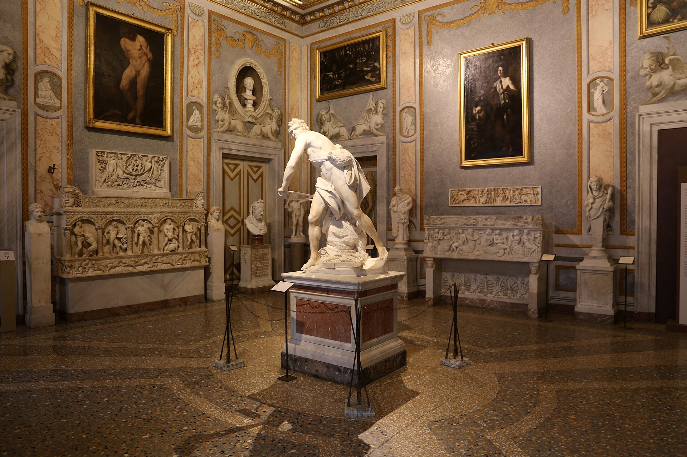
《大卫》
与米开朗基罗“战前沉思”的大卫不同，贝尼尼抓的是甩出石头的刹那：身体拧成螺旋、眉头紧锁。据说那张脸是照着镜子里的自己刻的。
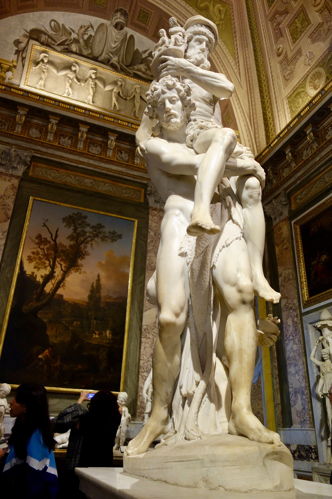
《埃涅阿斯与安喀塞斯》
特洛伊英雄背着老父逃出火城，小儿子阿斯卡尼乌斯跟在身后。贝尼尼 20 岁的成名作--祖孙三代与三块年龄的大理石，父亲手臂上的皮肤已现松弛。

《保利娜·波拿巴》
拿破仑的妹妹斜倚卧榻扮成胜利维纳斯。卡诺瓦把新古典的“冷”雕到极致，大理石垫子仿佛真会陷下去。被问摆 pose 尴尬与否，她答：“为什么不？房间里有炉火取暖。”
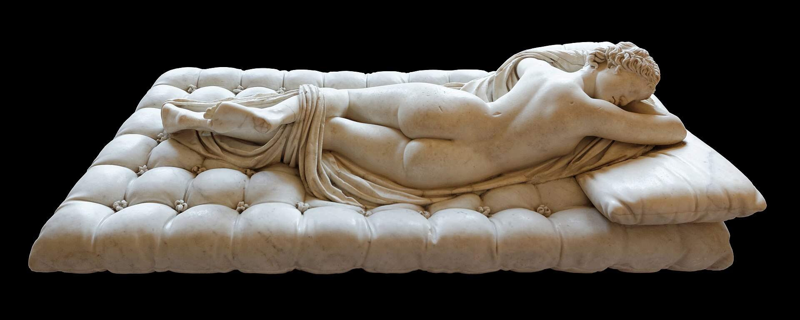
《沉睡的赫尔玛弗洛狄托》
色雷斯大理石雕的性别暧昧之神，趴在贝尼尼后来补雕的锦缎床垫上--两千年前的神话遇上十七世纪的写实：布料褶皱柔软得可以按出指印。
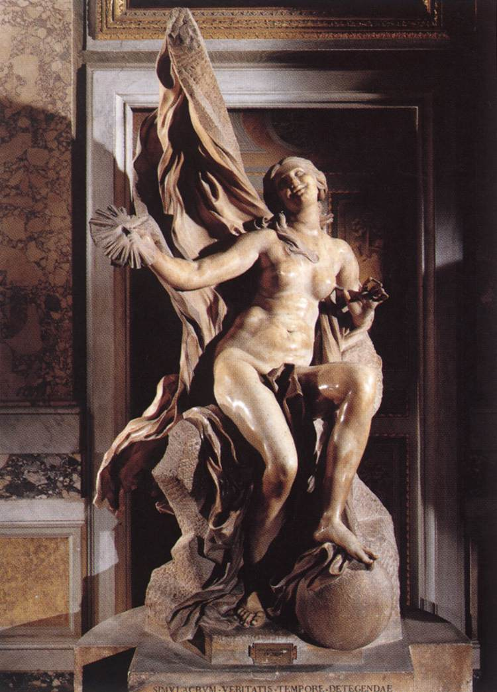
《时间揭穿真理》
赤裸的真理女神被时间之神掀起面纱--贝尼尼为自己的辩护之作：他坚称这件雕塑隐喻“被诽谤终会昭雪的自己”。生前未完成，也没能等来平反。
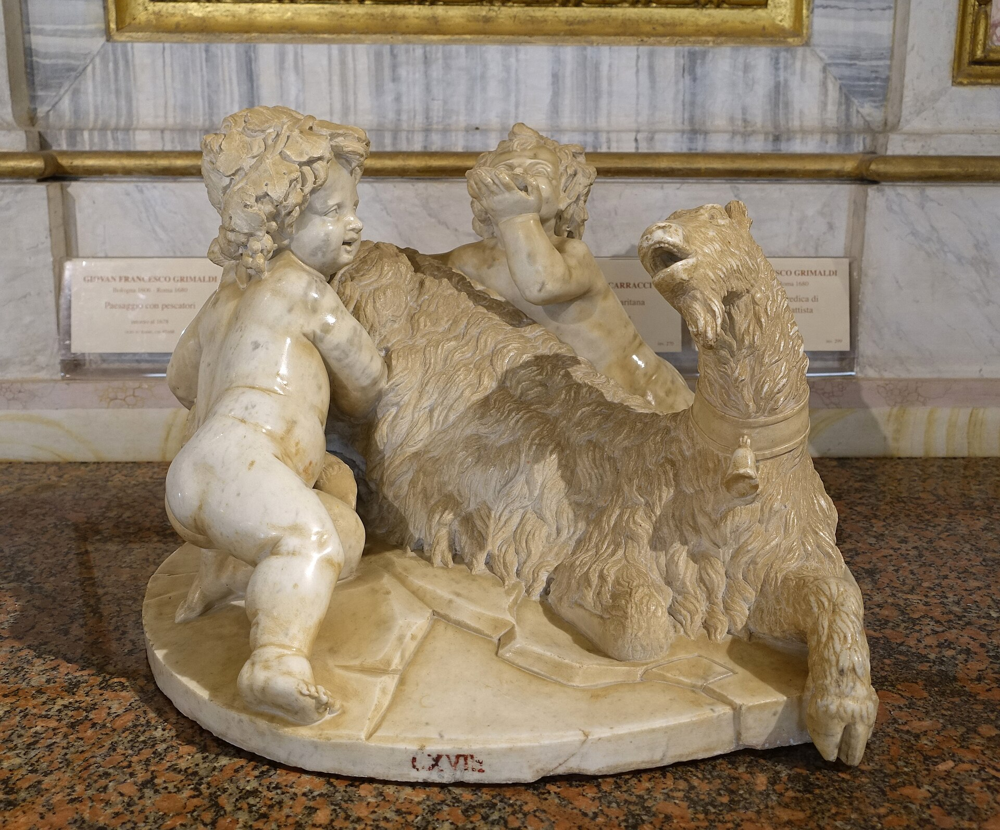
《母山羊阿玛尔忒亚》
少年贝尼尼（一说与其父合作）雕的哺育宙斯的山羊，被教皇保罗五世赞为“奇迹”。它是馆藏里最早期的贝尼尼--天才的出厂设置。
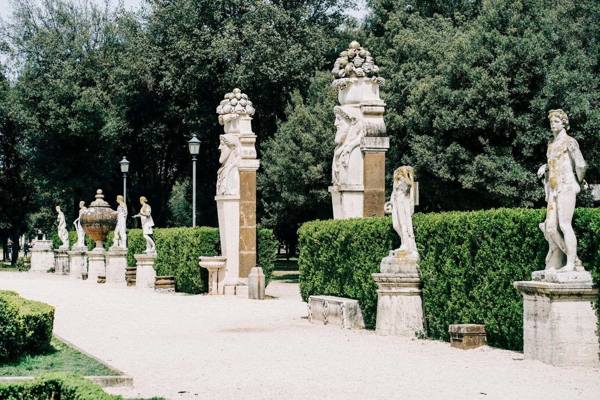
古典雕塑长廊
馆内环廊陈列着数百件罗马时代的神祇与皇帝胸像--西皮奥内主教当年按“头顶重量”收购的古代收藏，是文艺复兴以来罗马贵族“古董热”的标本库。
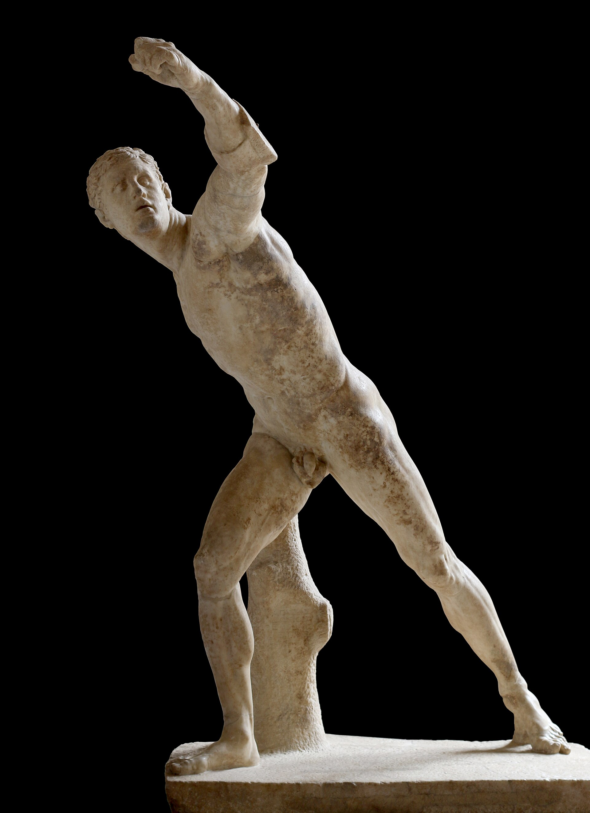
《博尔盖塞角斗士》的离散往事
这尊著名的“挥臂角斗士”1807 年随 154 件雕塑一起被卖给拿破仑，成为卢浮宫的镇馆之宝。它在这座美术馆留下的只有故事：收藏的顶峰，也是散佚的起点。
绘画Pittura · 10 件
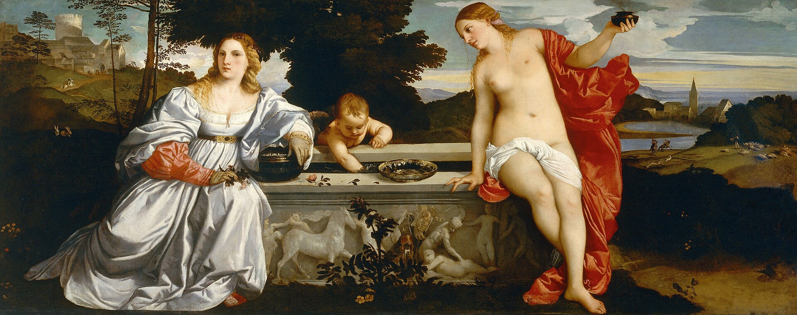
《神圣与世俗之爱》
两位维纳斯--盛装的世俗之爱与裸体的神圣之爱--同坐一泉。提香 25 岁的杰作，文艺复兴威尼斯派对“美”的双重定义，画面里每一件道具都是一则寓言。
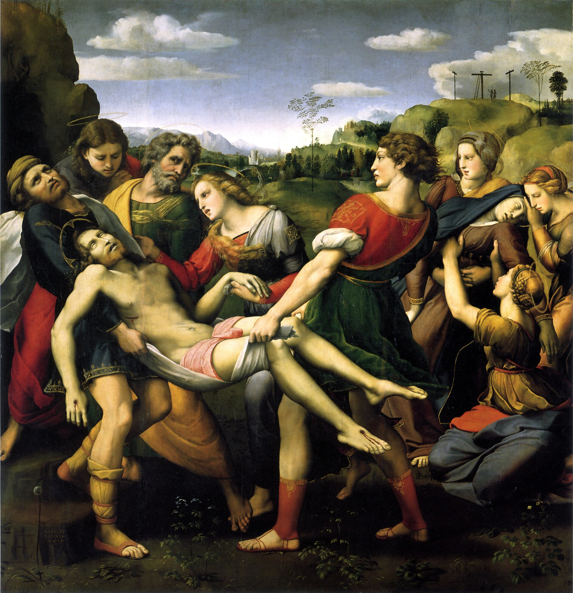
《耶稣下葬》
基督的身体顺石板滑落，众人的悲恸凝成对角线的洪流。23 岁拉斐尔吸收了米开朗基罗的筋骨与佩鲁吉诺的优雅，此画一出，佛罗伦萨同题作品全部过时。
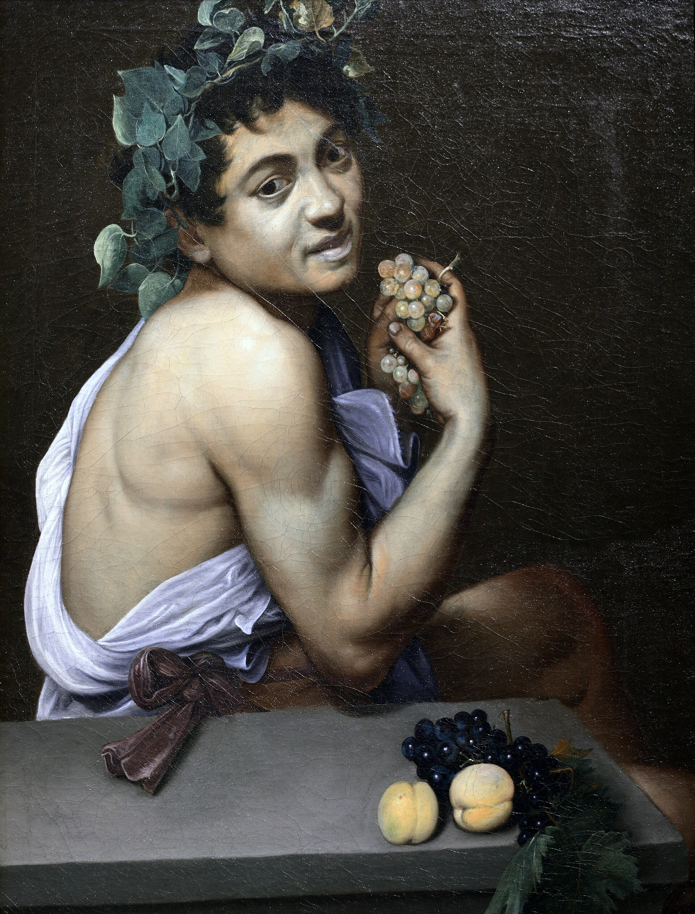
《生病的巴克斯》
初到罗马的卡拉瓦乔疟疾初愈，照着镜子画下病容酒神：灰绿的皮肤、脏指甲、干枯的叶冠。没有神性，只有一个真实的病中青年--现实主义从此抬头。
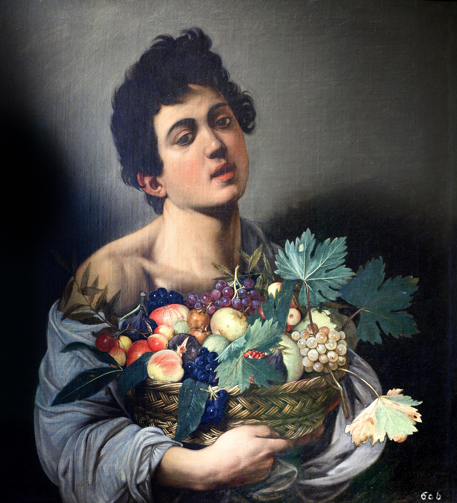
《提果篮的少年》
少年怀抱满筐秋果：苹果有虫眼、叶子已枯卷。卡拉瓦乔连静物都不肯说谎--这幅画是罗马最早的“静物与人物平等”宣言。

《手提歌利亚头的大卫》
大卫提着的歌利亚头颅，是卡拉瓦乔的自画像--他画此画送给红衣主教乞求赦免死刑令。以自己的人头换一条生路，艺术史上最沉重的一次签名。
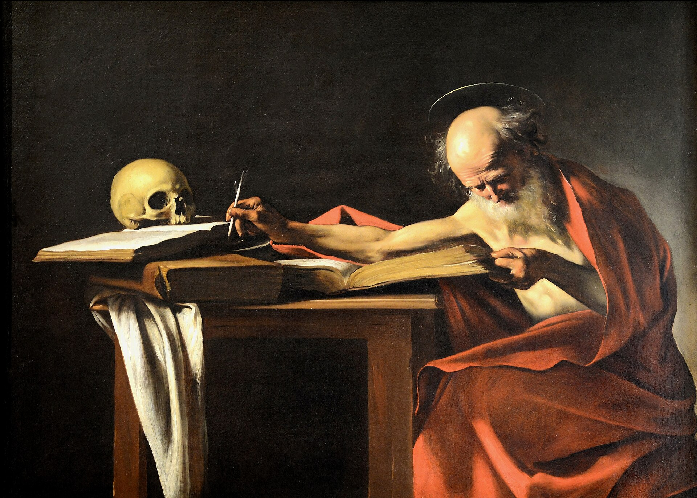
《写作的圣杰罗姆》
赤裸上身的圣杰罗姆伏案译经，骷髅与红衣主教帽并置--老年、死亡与教会职位在同一张桌上。卡拉瓦乔把“学者圣徒”画成了一个熬夜的老知识分子。
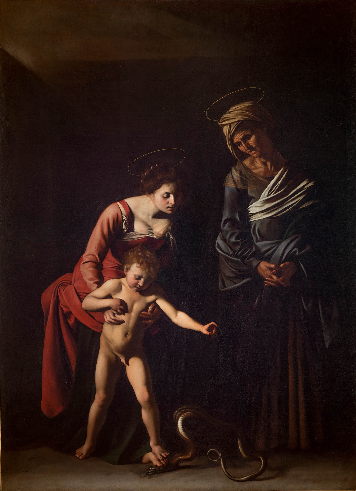
《圣母与蛇》
幼年耶稣踩死毒蛇，圣母与圣安妮在旁。因“圣母赤脚太穷酸”被退回的一幅画--卡拉瓦乔与教会的审美战争，从鞋袜打到神性。
《年轻男子肖像》
馆藏中归属争论最久的拉斐尔：侧面像的青年眉眼低垂。多位鉴定家认定是拉斐尔自画像的早期版本，也有人力主出自同代人之手。
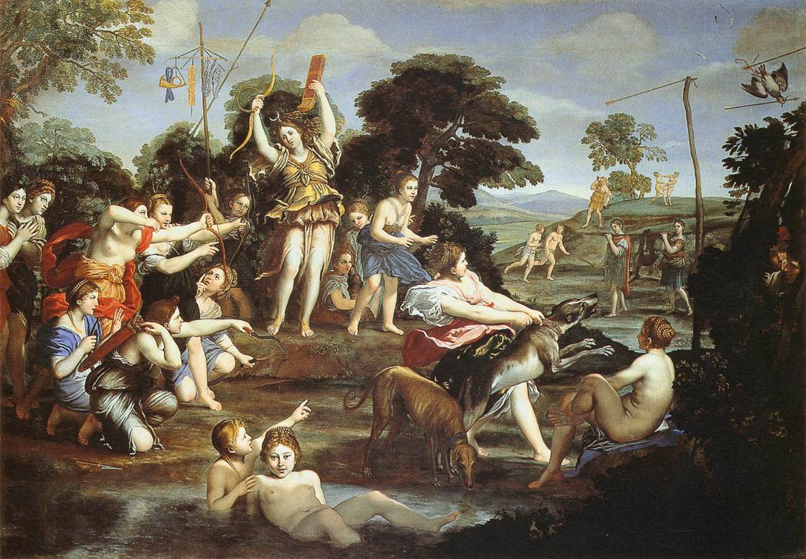
《狄安娜狩猎》
月光女神狄安娜与宁芙仙女狩猎归来。博洛尼亚学派把古典的秩序感带进罗马--同一展厅里，它与贝尼尼的雕塑互相注释。
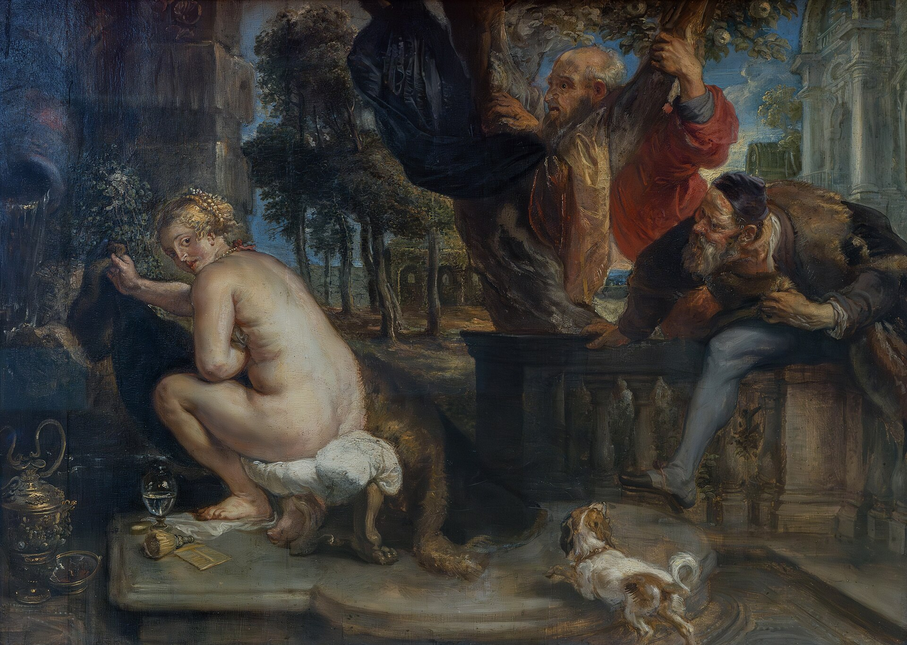
《苏珊娜与长老》
少年鲁本斯旅居罗马时的作品：沐浴的苏珊娜被两名长老窥视。佛兰德斯式丰腴肉感初露端倪--三十年后他将统治欧洲画坛。
历史故事
Le Storie
壹收藏狂主教
西皮奥内·博尔盖塞是教皇保罗五世的侄子、罗马实质上的“文化部长”，也是 17 世纪最不择手段的收藏家：他看中的东西几乎没有拿不到的。画家多梅尼基诺拒绝卖画？主教直接让人半夜把画从他工作室“搬”走，事后给了一点象征性补偿。
他 26 岁买下这片葡萄园建别墅，又以近乎独裁的品味布展：贝尼尼的雕塑要配最贵的古代红大理石底座，画挂到他满意的高度为止。
1807 年家道中落，他的后人卡米洛把 154 件雕塑、160 幅画打包卖给了姐夫拿破仑--如今卢浮宫里一整厅的“博尔盖塞收藏”就是那次的战利品。留下的这些，是没卖掉的部分--已经是世界级。
贰贝尼尼的 twenty-something
1621 到 1625 四年间，二十出头的贝尼尼完成了普洛塞庇娜、大卫、阿波罗与达芙妮--三件改写雕塑史的作品全部在这个馆里，直线距离不超过 50 米。
他与传记作者记录过自己的方法论：石头里已经有形象，雕刻只是“把多余的部分去掉”--米开朗基罗说过几乎一样的话。但贝尼尼更进一步：他不追求理想的静，只追求戏剧的“正在发生”。
看阿波罗与达芙妮有个隐藏机位：从展厅入口正对的角度，达芙妮的惊呼、阿波罗的错愕、飘起的纱与叶构成一个完整的 X 形--那是贝尼尼为你预设的“观众席”。
叁半夜搬来的画
多梅尼基诺的《狩猎狄安娜》如今挂在馆里，但它到博尔盖塞的路相当不光彩：1608 年主人不肯卖，西皮奥内动用教廷权力施压，最终画在夜间被“转移”，艺术家本人上诉多年无果。
教皇侄子的收藏逻辑是：美属于有权力保护它的人。这种傲慢成就了美术馆的密度，也写下了 17 世纪罗马的权力注脚。
在那幅画前多站十秒：画里的猎犬安静，画外的故事很吵。
肆用镜子雕的大卫
贝尼尼的大卫脸部表情凶狠、嘴唇紧抿--传记记载他把镜子摆在工作室里，边做动作边观察自己：甩石的瞬间，咬牙的力度，眉间的皱。
于是这尊大卫的脸，其实是 23 岁的贝尼尼自己。米开朗基罗的大卫看敌人，贝尼尼的大卫看自己--巴洛克艺术的心理学转向，就藏在这双眼睛里。
与 50 米外（在罗马）和一百年前的米开朗基罗版本对照看：一个是理想的人，一个是紧张的人。你更相信哪一个，决定了你更像哪个世纪。
伍卡拉瓦乔的赎罪画
1606 年，卡拉瓦乔在决斗中杀人后开始了南方逃亡：那不勒斯、马耳他、西西里。1608-1610 年间，他把《手提歌利亚头的大卫》送给有权赦免他的红衣主教希皮奥内。
大卫手里提着的歌利亚头颅，是卡拉瓦乔照着自己画的--一张浮肿、绝望的中年脸。以自己的人头换一条生路，是艺术史上最沉重的签名。
赦免令 1610 年发出，画在逃亡途中完成，人却在同一年病死海滩。他没等到那封信。
陆1807：一桩家族大甩卖
卡米洛·博尔盖塞娶了拿破仑的妹妹保利娜，迫于财政与政治双重压力，把家族 697 件古代雕塑与名画卖给拿破仑。合同价约等值今天的数千万欧元--后世估价普遍认为“半卖半送”。
这批“博尔盖塞收藏”运抵巴黎后轰动全城，至今占着卢浮宫整整一个展厅。罗马人为此愤怒了一个世纪：那是这座城市的古代遗产第一次成建制地流出国门。
今天馆里诸神济济，但最著名的《博尔盖塞角斗士》《沉睡的赫尔玛弗洛狄托》们不少已是“复刻顶替”或流落他乡的往事。看展时留意说明牌：每一处“今藏卢浮宫”都是 1807 年的伤口。
柒两小时的时间管理艺术
博尔盖塞的参观制度是博物馆学的极端案例：每场限 200 人、严格两小时、整点清场。这个“不近人情”的规则恰恰保存了看画的质量--这是全世界少数能让你在名作前独处的顶级美术馆。
制度的由来：建筑本是私人别墅，结构不适合大客流；与其扩容，不如把“稀缺”做成体验的一部分。
两小时很长：贝尼尼四件 + 卡拉瓦乔五幅 + 拉斐尔提香各一，慢慢看刚刚好。两小时也很短：买票迟到 30 分钟，就等于扔掉四分之一。
捌大理石的“皮肤科”
《劫掠普洛塞庇娜》里手指陷进大腿的凹陷，不是凿出来的魔术，是严格的工序：粗凿、细凿、锉、浮石打磨数周，最后上蜡让大理石呈现半透明的“体温”。
贝尼尼允许学徒参与粗坯，但皮肤与手指的最后一遍永远亲手完成。这就是为什么他 25 岁的作品比多数名家一生的作品更“软”。
看展时把手机镜头怼近（别开闪光灯）：那些“按痕”的边缘有极细微的抛光梯度--那是 17 世纪的手，在石头上留下的指纹。
玖别墅、松树与“罗马的中央公园”
美术馆背后的博尔盖塞花园是罗马第三大公园，曾是主教私产的葡萄园。17 世纪的规划里，收藏（建筑内）与自然（山丘园林）是一体的：看完贝尼尼去松荫下走，本来就是同一份设计。
花园高处的 Pincio 观景台可以俯瞰人民广场--黄昏时罗马人在这约会、跑步、拉手风琴。
一张门票的时间经济学：两小时看展 + 一小时花园落日 = 一整天里最罗马的部分。
拾《保利娜》与那个时代的体面
卡诺瓦雕保利娜时，她坚持要扮成胜利维纳斯斜倚--这个姿势在当时的贵族圈引起非议：她可是拿破仑的妹妹、博尔盖塞家的儿媳。
面对“不害臊吗”的质疑，她的回答成了罗马沙龙的金句：“为什么不？拍照（摆姿势）的房间里有炉火，暖和。”
卡诺瓦的处理则极其体面：卧榻与织物的写实登峰造极，但人物的眼神望向虚空，既端庄又放肆。雕像后来差点被家族后人卖掉抵债--如今它是美术馆的“门面”，印在无数明信片上。
参观贴士
Consigli Pratici
- 强预约 + 限流 200 人/场，旺季（含 10 月）提前 1 个月放票即抢，€15 的票被黄牛炒到 €80+
- 每场 2 小时含寄存与取包时间，实际看展约 100 分钟，动线建议：一层雕塑 -> 二层绘画
- 馆内可拍照（禁闪光），贝尼尼雕塑的最佳光线在上午场
- 花园（Villa Borghese）免费，看完展去 Pincio 观景台看人民广场落日，一票两景
- 每周一闭馆，排行程时注意别和乌菲兹“周一闭馆”冲突在同一天
顺路同游
Da Non Perdere